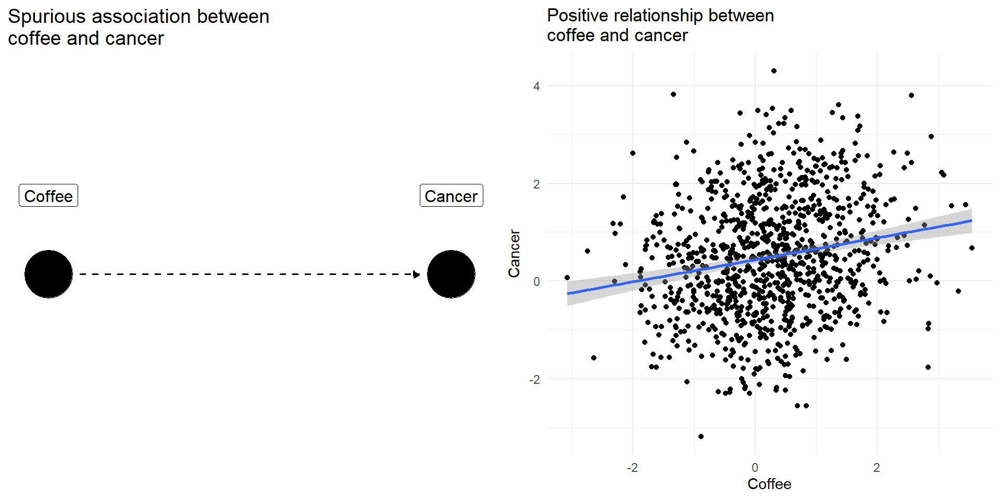
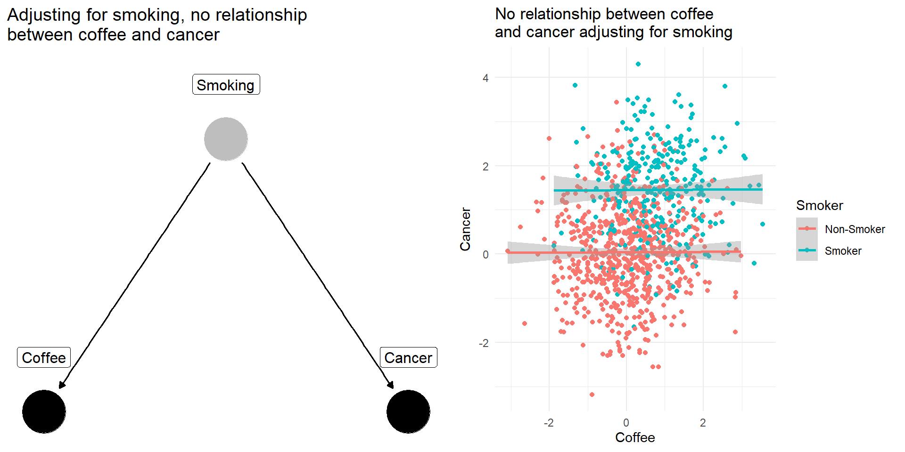
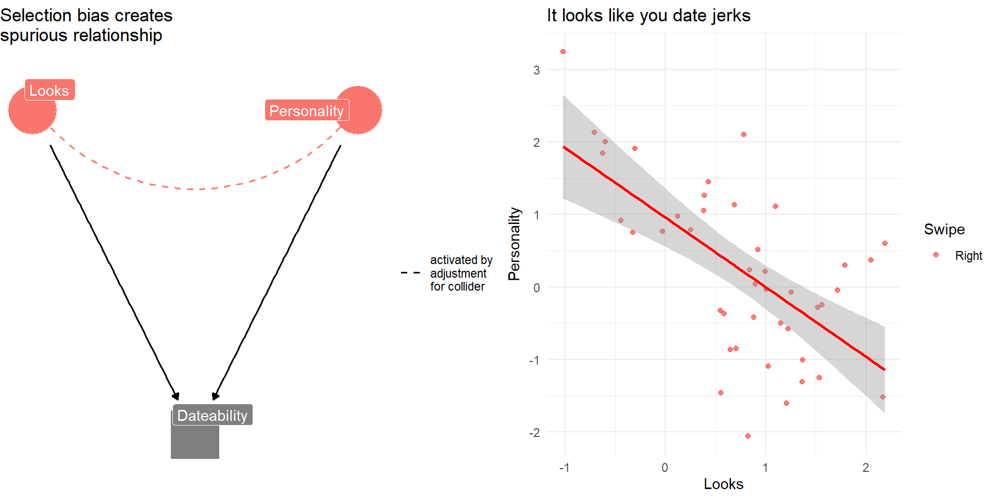
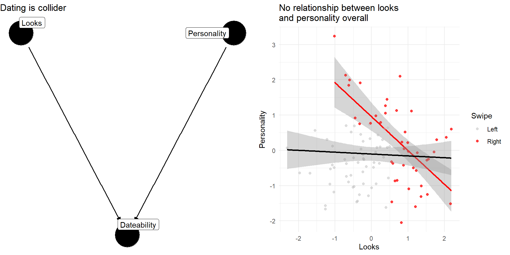

| Skill | Common Commands |
|---|---|
| Setup R | library(), |
| Load data | read_csv(), load() |
| Get HLO of data | df$x, glimpse(), table(), summary() |
| Transform data | <-, mutate(), ifelse(), case_when() |
| Reshape data | pivot_longer(), left_join() |
| Summarize data numerically | mean(), median(), summarise(), group_by() |
| Summarize data graphically | ggplot(), aes(), geom_ |
POLS 1600
Casual Inference in
Observational Designs
Updated Feb 18, 2026
Overview
Annoucements
Assignment 1
Come up with three research questions topics that interest your group. For each:
- Why do we care:
- How would you explain this question to your parents?
- The ideal experiment:
- What would you have to be able to randomly assign?
- The observational study:
- What kinds of data would you need? How would you measure outcome(s) and key predictors?
- A published study:
- How have others studied this question?
- Feasibility: (X/10)
- Are data available?
Review
Review
Data wrangling
Descriptive Statistics
Levels of understanding
Data visualization
Data Wrangling
Data wrangling
Mapping Concepts to Code
Takes time and practice
Don’t be afraid to FAAFO
Don’t worry about memorizing everything.
Statistical programming is necessary to actually do empirical research
Learning to code will help us understand statistical concepts.
Learning to think programmatically and algorithmically will help us tackle complex problems
Descriptive Statiscs
Descriptive statistics
Descriptive statistics help us describe what’s typical of our data
What’s a typical value in our data
How much do our data vary?
As one variable changes how does another change?
Descriptive statistics are:
- Diagnostic
- Generative
Levels of understanding
Levels of understanding in POLS 1600
Conceptual
Practical
Definitional
Theoretical
Let’s illustrate these different levels of understanding about our old friend the mean
Mean: Conceptual Understanding
A mean is:
A common and important measure of central tendency (what’s typical)
It’s the arithmetic average you learned in school
We can think of it as the balancing point of a distribution
A conditional mean is the average of one variable \(X\), when some other variable, \(Z\) takes a value \(z\)
- Think about the average height in our class (unconditional mean) vs the average height among men and women ([conditional means].{blue})
Mean as a balancing point

Mean: Practical
There are lots of ways to calculate means in R
The simplest is to use the
mean()function- If our data have missing values, we need to to tell
Rto remove them
- If our data have missing values, we need to to tell
Conditional Means: Practical
- To calculate a conditional mean we could us a logical index
[df$z == 1]
- If we wanted to a calculate a lot of conditional means we could use the
mean()in combination withgroup_by()andsummarise()
Mean: Definitional
Formally, we define the arithmetic mean of \(x\) as \(\bar{x}\):
\[ \bar{x} = \frac{1}{n}\left (\sum_{i=1}^n{x_i}\right ) = \frac{x_1+x_2+\cdots +x_n}{n} \]
In words, this formula says, to calculate the average of x, we sum up all the values of \(x_i\) from observation \(i=1\) to \(i=n\) and then divide by the total number of observations \(n\)
Mean: Definitional
In this class, I don’t put a lot of weight on memorizing definitions (that’s what Google’s for).
But being comfortable with “the math” is important and useful
Definitional knowledge is a prerequisite for understanding more theoretical claims.
Mean: Theoretical
Suppose I asked you to show that the sum of deviations from a mean equals 0?
\[ \text{Claim:} \sum_{i=1}^n (x_i -\bar{x}) = 0 \]
Mean: Theoretical
Knowing the definition of an arithmetic mean, we could write:
\[ \begin{aligned} \sum_{i=1}^n (x_i -\bar{x}) &= \sum_{i=1}^n x_i - \sum_{i=1}^n\bar{x} & \text{Distribute Summation}\\ &= \sum_{i=1}^n x_i - n\bar{x} & \text{Summing a constant, } \bar{x}\\ &= \sum_{i=1}^n x_i - n\times \left ( \frac{1}{n} \sum_{i=1}^n{x_i}\right ) & \text{Definition of } \bar{x}\\ &= \sum_{i=1}^n x_i - \sum_{i=1}^n{x_i} & n \times \frac{1}{n}=1\\ &= 0 \end{aligned} \]
Mean: Theoretical
Why do we care?
Showing the deviations sum to 0 is another way of saying the mean is a balancing point.
This turns out to be a useful property of means that will reappear throughout the course
If I asked you to make a prediction, \(\hat{x}\) of a random person’s height in this class, the mean would have the lowest mean squared error (MSE \(=\frac{1}{n}\sum (x_i - \hat{x_i})^2)\)
Mean: Theoretical
Occasionally, you’ll read or here me say say things like:
The sample mean is an unbiased estimator of the population mean
In a statistics class, we would take time to prove this.
The sample mean is an unbiased estimator of the population mean
Claim:
Let \(x_1, x_2, \dots x_n\) from a random sample from a population with mean \(\mu\) and variance \(\sigma^2\)
Then:
\[ \bar{x} = \frac{1}{n}\left (\sum_{i=1}^n x_i\right ) \]
is an unbiased estimator of \(\mu\)
\[ E[\bar{x}] = \mu \]
The sample mean is an unbiased estimator of the population mean
Proof:
\[ \begin{aligned} E\left [\bar{x} \right] &= E\left [\frac{1}{n}\left (\sum_{i=1}^n x_i \right) \right] & \text{Definition of } \bar{x} \\ &= \frac{1}{n} \sum_{i=1}^nE\left [ x_i \right] & \text{Linearity of Expectations} \\ &= \frac{1}{n} \sum_{i=1}^n \mu & E[x_i] = \mu \\ &= \frac{n}{n} \mu & \sum_{i=1}^n \mu = n\mu \\ &= \mu & \blacksquare \\ \end{aligned} \]
Levels of understanding
In this course, we tend to emphasize the
Conceptual
Practical
Over
Definitional
Theoretical
In an intro statistics class, the ordering might be reversed.
Trade offs:
- Pro: We actually get to work with data and do empirical research much sooner
- Cons: We substitute intuitive understandings for more rigorous proofs
Causal Inference
Causal inference is about counterfactual comparisons
Causal inference is about counterfactual comparisons
- What would have happened if some aspect of the world either had or had not been present
Causal Identification
Casual Identification refers to “the assumptions needed for statistical estimates to be given a causal interpretation” Keele (2015)]
- What do we need to assume to make our claims about cause and effect credible
Experimental Designs rely on randomization of treatment to justify their causal claims
Observational Designs require additional assumptions and knowledge to make causal claims
Experimental Designs
Experimental designs are studies in which a causal variable of interest, the treatement, is manipulated by the researcher to examine its causal effects on some outcome of interest
Random assignment is the key to causal identification in experiments because it creates statistical independence between treatment and potential outcomes any potential confounding factors
\[
Y_i(1),Y_i(0),\mathbf{X_i},\mathbf{U_i} \unicode{x2AEB} D_i
\]
Randomization creates credible counterfactual comparisons
If treatment has been randomly assigned, then:
- The only thing that differs between treatment and control is that one group got the treatment, and another did not.
- We can estimate the Average Treatment Effect (ATE) using the difference of sample means
\[ \begin{aligned} E \left[ \frac{\sum_1^m Y_i}{m}-\frac{\sum_{m+1}^N Y_i}{N-m}\right]&=\overbrace{E \left[ \frac{\sum_1^m Y_i}{m}\right]}^{\substack{\text{Average outcome}\\ \text{among treated}\\ \text{units}}} -\overbrace{E \left[\frac{\sum_{m+1}^N Y_i}{N-m}\right]}^{\substack{\text{Average outcome}\\ \text{among control}\\ \text{units}}}\\ &= E [Y_i(1)|D_i=1] -E[Y_i(0)|D_i=0] \end{aligned} \]
Observational Designs
Observational designs are studies in which a causal variable of interest is determined by someone/thing other than the researcher (nature, governments, people, etc.)
Since treatment has not been randomly assigned, observational studies typically require stronger assumptions to make causal claims.
Generally speaking, these assumptions amount to a claim about conditional independence
\[ Y_i(1),Y_i(0),\mathbf{X_i},\mathbf{U_i} \unicode{x2AEB} D_i | K_i \]
- Where after conditioning on \(K_i\), some knowledge about the world and how the data were generated, our treatment is as good as (as-if) randomly assigned (hence conditionally independent)
- Economists often call this assumption of selection on observables
Causal Inference in Observational Studies
To understand how to make causal claims in observational studies we will:
Introduce the concept of Directed Acyclic Graphs to describe causal relationships
Discuss three approaches to covariate adjustment
- Subclassification
- Matching
- Linear Regression
Three research designs for observational data
- Differences-in-Differences
- Regression Discontinuity Designs
- Instrumental Variables
Directed Acyclic Graphs
Two Ways to Describe Causal Claims
In this course, we will use two forms of notation to describe our causal claims.
Potential Outcomes Notation (last lecture)
- Illustrates the fundamental problem of causal inference
Directed Acyclic Graphs (DAGs)
- Illustrates potential bias from confounders and colliders
Directed Acyclic Graphs
Directed Acyclic Graphs provide a way of encoding assumptions about casual relationships
Directed Arrows \(\to\) describe a direct causal effect
Arrow from \(D\to Y\) means \(Y_i(d) \neq Y_i(d^\prime)\) “The outcome ( \(Y\)) for person \(i\) when D happens ( \(Y_i(d)\) ) is different than the the outcome when \(D\) doesn’t happen ( \(Y_i(d^\prime)\) )
No arrow = no effect ( \(Y_i(d) = Y_i(d^\prime)\) )
Acyclic: No cycles. A variable can’t cause itself
Types of variables in a DAG

Research Design in the Social Sciences (Chap. 6.2)
Causal Explanations Involve:
Your outcomeDA possible cause of YMA mediator or mechanism through whichDeffectsYZAn instrument that can help us isolate the effects of D on `YX2a covariate that may moderate the effect ofDonY
Threats to causal claims/Sources of bias:
X1an observed confounder that is a common cause of bothD&YUan unobserved confounder a common cause of bothD&YKa collider that is a common consequence of bothD&Y
DAGs illustrate two sources of bias:
Confounder bias: Failing to control for a common cause of
DandY(aka Omitted Variable Bias)Collider bias: Controlling for a common consequence (aka Selection Bias1)
Confounding Bias: The Coffee Example
Drinking coffee doesn’t cause lung cancer we might find correlation between them because they share a common cause: smoking.
Smoking is a [confounding] variable, that if omitted will bias our results producing a spurious relationsip
[Adjusting] for [confounders] removes this source of bias


Collider Bias: The Dating Example
Why are attractive people such jerks?
Suppose dating is a function of looks and personality
Dating is a common consequences of looks and personality
Basing our claim off of who we date is an example of selection bias created by controlling for collider


Covariate Adjustment
Covariate Adjustment
Covariate adjustment refers a broad class of procedures that try to make a comparison more credible or meaningful by adjusting for some other potentially confounding factor.
Covariate Adjustment
When you hear people talk about
- Controlling for age
- Conditional on income
- Holding age and income constant
- Ceteris paribus (All else equal)
They are typically talking about some sort of covariate adjustment.
Three approaches to covariate adjustment
- Subclassification
- 👍: Easy to implement and interpret
- 👎: Curse of dimensionality, Selection on observables
- Matching
- 👍: Balance on multiple covariates, Mirrors logic of experimental design
- 👎: Selection on observables, Only provides balance on observed variables, Lot’s of technical details…
- Regression
- 👍: Easy to implement, control for many factors (good and bad)
- 👎: Selection on observables, easy to fit “bad” models

POLS 1600